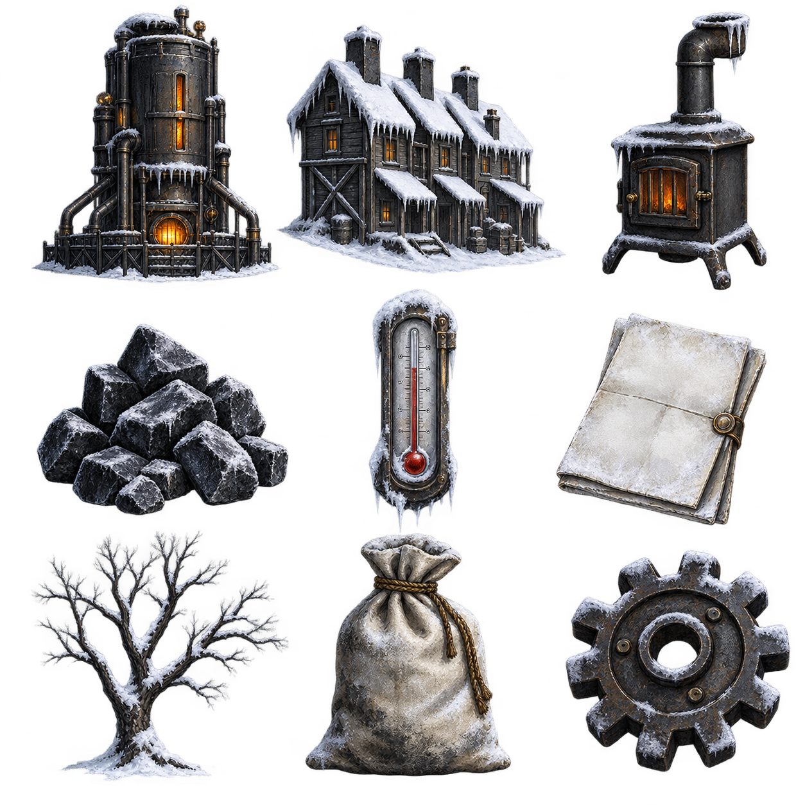

ORDINANCE BOOK / SIGNATURES REQUIREDHOPE 52 / 100 · DISCONTENT 21 / 100
PROPOSED DECREES
WORKSHOP / RESEARCH HOURGLASSAVAILABLE 28 HOURS
THREE SHORT BRANCHES / SELECT A NODE
HEAT
FOOD
EXPLORATION
SELECTED PROJECTSawmill16 research hours · available
Preview only · no research hours spent.
CITY STATUS / EDGE READOUTGENERATOR LEVEL II · POPULATION 42
OUTSIDE TEMPERATURE / THRESHOLD
−20°DANGEROUS
SAFECOLDDANGEROUS
DANGEROUS COLD · Generator output steady

RESOURCE TRENDS
Coal−18 / day450
Wood+6 / day120
Steel+2 / day36
Food Rations−11 / day86
Coal ThrottleReduce generator coal use by 4 / day
Hope 52 / 100
Discontent 21 / 100
Thermal warning: dangerous cold at −20°C.